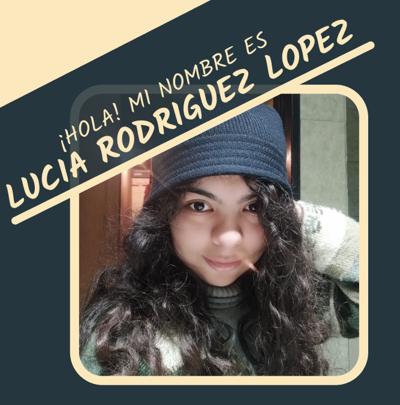
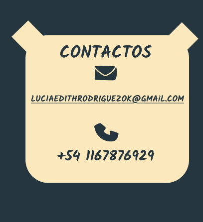
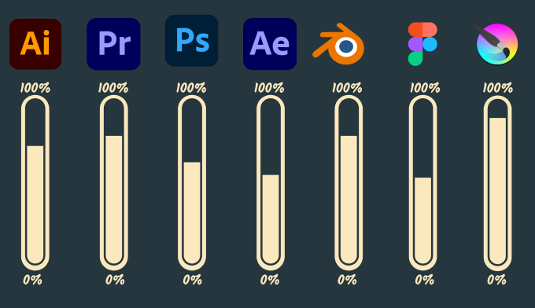

¿QUIEN SOY?
Soy estudiante del último año de Diseño Multimedial en la Universidad de ISEC, apasionado/a por la creatividad y la innovación.
Me especializo en el estilo cartoon, combinando ilustración y diseño para dar vida a ideas únicas. Me encanta experimentar con nuevos estilos y técnicas, adaptándome a diferentes desafíos creativos. Mi objetivo es superar límites y explorar todas las posibilidades que el diseño puede ofrecer.

SOFTWARE
